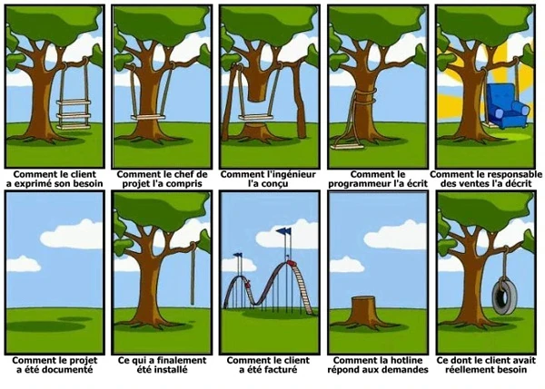

D1 • Pôle valorisation de la donnée et cybersécurité
1. Qu’est-ce qu’un cahier des charges ?
Un cahier des charges est un document professionnel qui décrit précisément un projet à réaliser.
Il permet de définir :
- Le besoin du client
- Les contraintes à respecter
- Les ressources nécessaires
- Les critères de réussite
- L’organisation du projet
Il sert de référence commune entre le client, le chef de projet, les techniciens et les partenaires.
Je me teste
2. Pourquoi est-il indispensable ?
Un cahier des charges permet d’éviter les malentendus, de structurer le travail et de vérifier que le projet est réussi. Sans lui, le projet est flou, les erreurs sont fréquentes, les délais mal gérés et le client peut contester le travail.
Structure d’un cahier des charges
- Présentation du projet : Le nom du projet doit être court et précis, structuré selon Quoi, Qui, Quand. Le contexte décrit l’existant, ce qui manque et le besoin d’intervention, sans proposer de solution. L’objectif principal résume le résultat attendu en une phrase.
- Besoins fonctionnels : Les besoins fonctionnels indiquent ce que le client doit pouvoir faire avec la solution. Ils décrivent les usages et les utilisateurs, pas le matériel ni les contraintes.
- Contraintes techniques : Les contraintes décrivent ce qui limite ou encadre le projet. Une contrainte n’est pas un besoin fonctionnel.
- Ressources nécessaires : Les ressources sont les moyens concrets utiles à la réalisation du projet.
- Critères de réussite : Un critère de réussite doit être concret, vérifiable et mesurable ou testable.
- Organisation du projet : planning prévisionnel : Le planning organise les tâches, responsables, durées, ordre logique et date limite.
Je me teste
3. Rédiger le cahier des charges
3.1 Présentation du projet
Le nom du projet doit être court et précis, structuré selon Quoi, Qui, Quand. Le contexte décrit l’existant, ce qui manque et le besoin d’intervention, sans proposer de solution. L’objectif principal résume le résultat attendu en une phrase.
- Type de mission, client ou site, mois et année
- Décrire ce que possède déjà le client
- Identifier ce qui ne fonctionne pas ou manque
- Exprimer l’objectif principal en une phrase
3.2 Besoins fonctionnels
Les besoins fonctionnels indiquent ce que le client doit pouvoir faire avec la solution. Ils décrivent les usages et les utilisateurs, pas le matériel ni les contraintes.
- Qui utilise le système et où ?
- Les employés peuvent se connecter au Wi-Fi dans toute la salle.
- Le responsable peut consulter les caméras à distance.
- Les données sont sauvegardées chaque nuit.
- L’accès aux salles sensibles est réservé au personnel autorisé.
3.3 Contraintes techniques
Les contraintes décrivent ce qui limite ou encadre le projet. Une contrainte n’est pas un besoin fonctionnel.
- Bâtiment et matériel existant
- Budget et délai
- Normes et sécurité
- Alimentation électrique et environnement
- Exemple : aucune interruption de service pendant l’installation.
3.4 Ressources nécessaires
Les ressources sont les moyens concrets utiles à la réalisation du projet.
- Matériel à installer (NAS, onduleur, bornes Wi-Fi…)
- Logiciels et licences
- Accès réseau et services
- Personnes chargées de l’intervention
3.5 Critères de réussite
Un critère de réussite doit être concret, vérifiable et mesurable ou testable.
- Wi-Fi fonctionnel dans toute la salle sans coupure
- Sauvegarde entièrement restaurée lors d’un test
- Accès refusé aux personnes non autorisées
- Logs consultables
- Installation terminée dans les délais
3.6 Organisation du projet : planning prévisionnel
Le planning organise les tâches, responsables, durées, ordre logique et date limite.
- Une tâche correspond à une action précise.
- Chaque tâche a un responsable et une durée réaliste.
- Le matériel est reçu avant son installation.
- Le planning respecte les week-ends et la date limite.
Je me teste
4. Exercice d’application : sécuriser un local informatique
Contexte : Atelier Répar’Tech
Vous êtes technicien pour une entreprise spécialisée en réseaux et cybersécurité. Votre client, Monsieur Lefèvre, est responsable technique de l’Atelier Répar’Tech.
L’atelier vient d’aménager un local pour stocker des pièces détachées et des ordinateurs clients en attente de réparation. Le matériel est précieux. Le réseau existe mais n’est pas segmenté. Le client souhaite améliorer la sécurité réseau et la protection du matériel.
Le client demande :
- Isoler le poste de diagnostic réseau grâce à un VLAN.
- Installer une caméra IP pour surveiller le local.
- Protéger les équipements contre les coupures électriques avec un onduleur.
Contraintes :
- Budget limité.
- Installation rapide.
- Aucun perçage au sol.
- Connexion Internet filaire déjà disponible.
Travail demandé : complète le cahier des charges
À partir des informations précédentes, rédige un cahier des charges préliminaire comprenant les cinq rubriques demandées.
Corrigé de l’exercice
Présentation du projet
- Nom : Sécurisation réseau et physique d’un local technique, Atelier Répar’Tech, juin 2026.
- Contexte : nouveau local de stockage. Réseau existant non segmenté. Sécurité physique et réseau insuffisante.
- Objectif : renforcer la sécurité du local technique en protégeant le réseau, les équipements et l’accès physique.
Besoins fonctionnels
- Isoler le poste de diagnostic via un VLAN.
- Protéger le réseau local contre les intrusions.
- Surveiller le local avec une caméra IP.
- Protéger les équipements contre les coupures électriques.
- Fournir un schéma et un rapport d’installation.
Contraintes techniques
- Budget limité.
- Installation rapide.
- Réseau existant non segmenté.
- Pas de perçage au sol.
- Connexion Internet filaire déjà en place.
Ressources nécessaires
- Switch manageable compatible VLAN.
- Caméra IP PoE.
- Onduleur 750 VA minimum.
- Câbles RJ45 Cat 6.
- Goulottes et fixations.
- Intervenant : technicien réseau.
Critères de réussite
- Le VLAN fonctionne correctement.
- La caméra transmet les images sans interruption.
- Les équipements restent alimentés en cas de micro-coupure.
- Le rapport d’intervention et le schéma réseau sont fournis.
5. Je vérifie mes connaissances
D1 • Cours, exercice et corrigé